One front door for customers and staff.
Jai Hind's shoppers saw a polished brand website. Its store staff worked in a plain teal dashboard that only ran on a computer. I redesigned the staff dashboard to look like Jai Hind, work on phones, and share one welcome screen with the shop website.
one welcome screen for shoppers and staff
- My role
- Product UX Designer, Jai Hind Group
- Timeline
- Role: Feb 2023 to Jul 2024. Redesign: self-directed.
- Team
- 3 designers and 1 PM on the original platform
- Delivered
- 52 screens, desktop and phone, and a clickable prototype
What the original platform achieved
The first three numbers were measured on the platform my team shipped. The redesign is a prototype and has not been tested with staff yet.
The short version
Jai Hind is a Pune fashion retailer with 10 stores. Shoppers find the brand online. Store staff take walk-in and phone orders in an internal dashboard.
Two products that looked like two companies
The staff dashboard looked nothing like the brand, only worked at a desk, hid order statuses off screen and caught stock problems too late.
Research to prototype
I audited both, sketched ideas, made wireframes, built a style guide from the brand, then redesigned all 26 staff screens for desktop and phone.
One front door
A clickable prototype that joins the shop website and the staff dashboard behind one welcome screen, ready to test with store staff.
Same jobs. A much better dashboard.
Staff still do the same daily work. What changed is how it looks, where it works, and how few mistakes it allows.


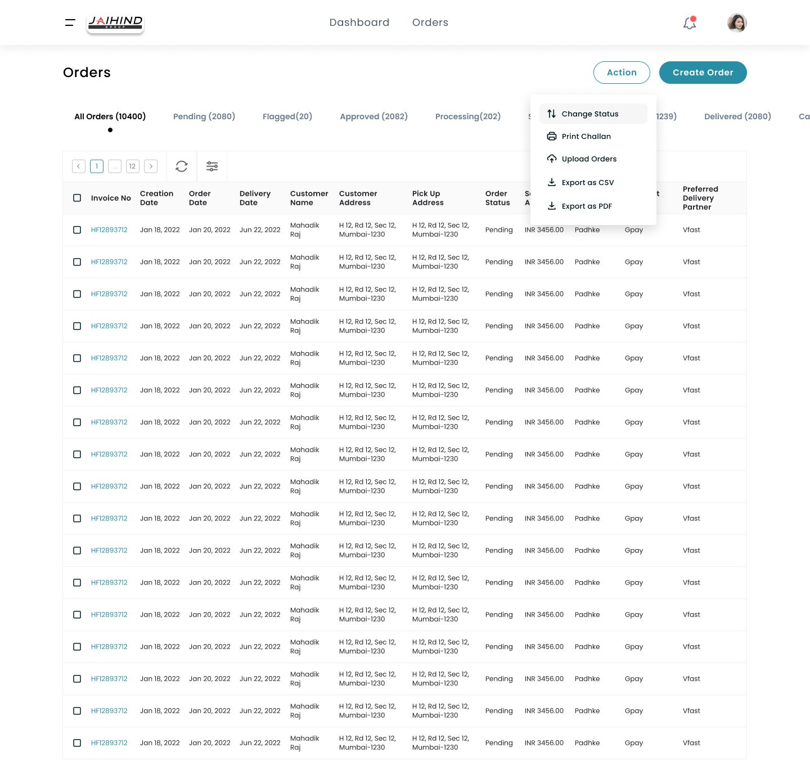
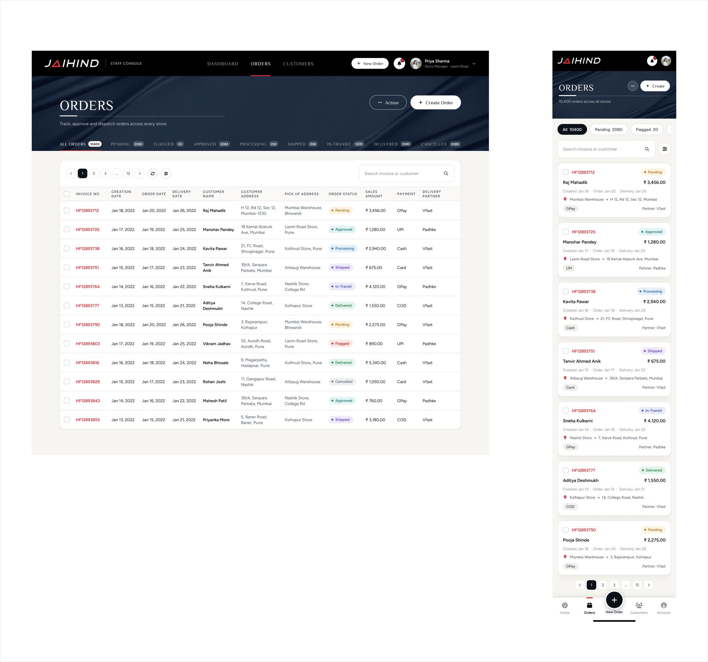
| What | Before | After |
|---|---|---|
| Look | Generic teal, no logo | Jai Hind's colors, fonts and photos |
| Phones | Desktop only | Every screen has a phone layout |
| Order status | Tabs cut off at the edge | All 9 tabs visible, each with a count |
| Stock | Checked after approving | Checked before approving |
| Phone orders | "No customer found" was a dead end | Add the customer right there |
| Cart | Could show 0 items by mistake | One live cart, always correct |
| Way in | Separate places for shoppers and staff | One welcome screen, two doors |
Six steps, from research to a clickable prototype
Understand the problem, explore ideas, fix the layout, style it, design every screen, then wire it up to test.
Research: find out what's broken, and for whom
I studied the live website (21 pages) and the team's dashboard (26 screens), then checked the dashboard against 10 standard usability rules.
- Found 10 problems. The 3 biggest: an off-brand look, no phone layouts, order tabs cut off.
- Wrote 3 personas: Rohan the shopper, Priya the store manager, Amit the floor associate. They're educated guesses until real staff test them.
- Mapped their journeys. Shoppers get stuck choosing a store; staff feel the most pressure on phone orders.
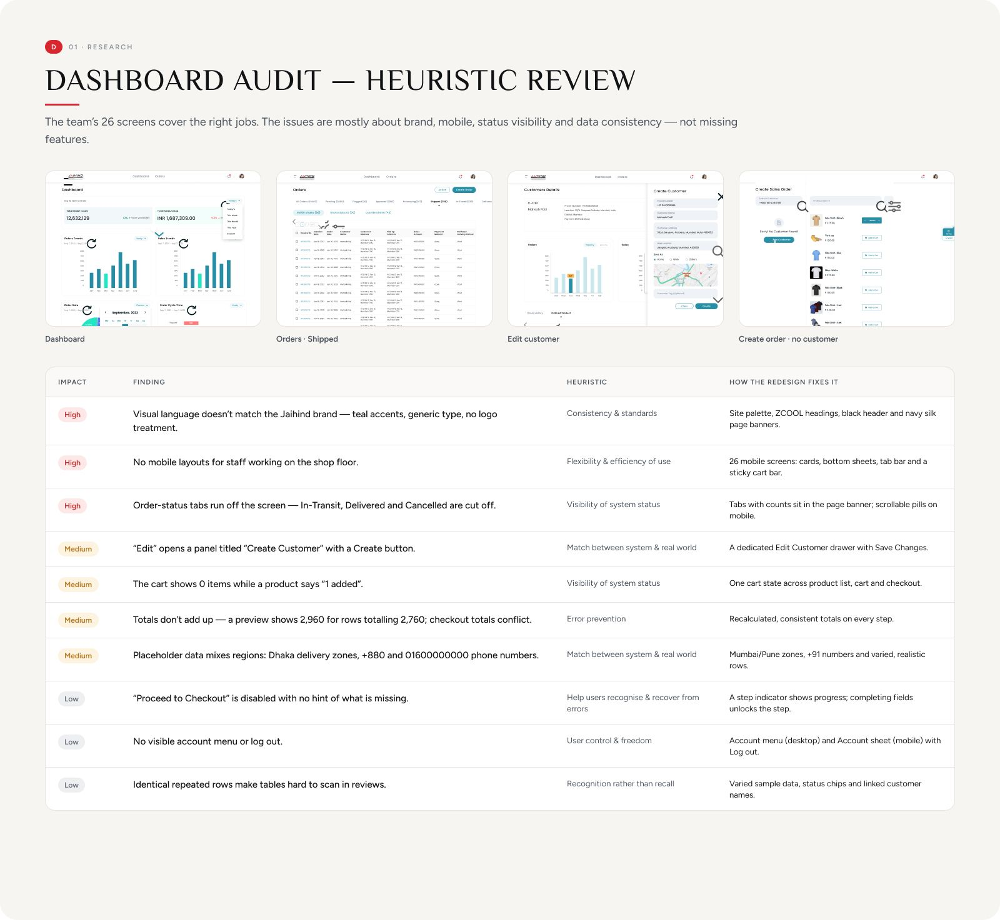
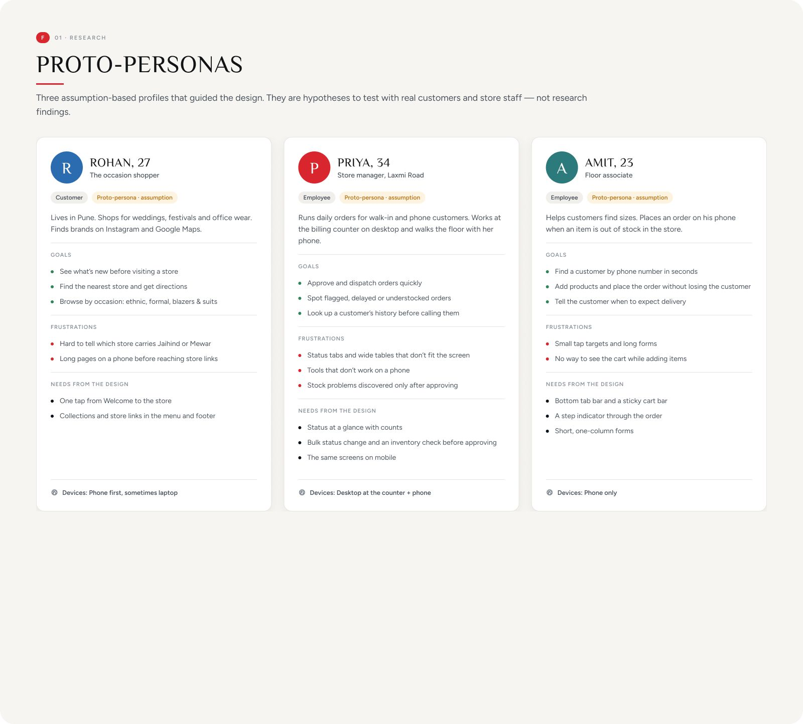
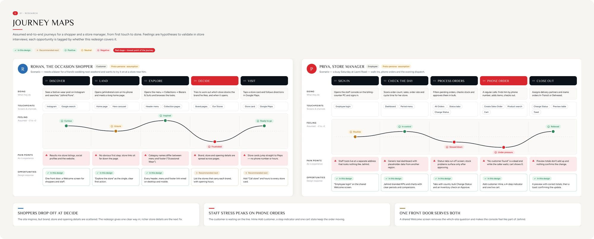
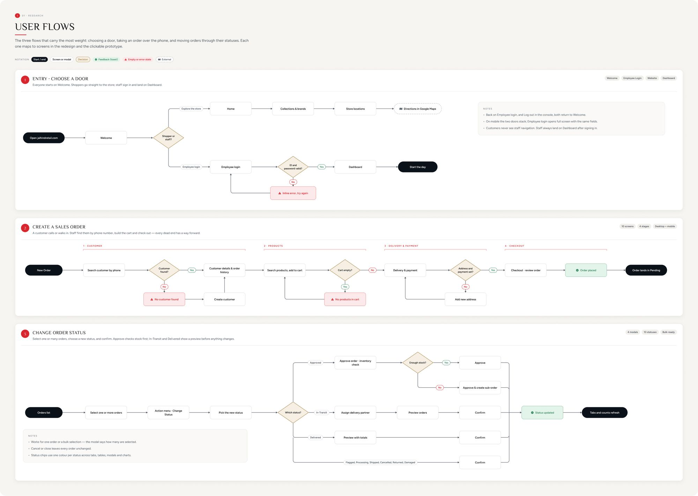
Sketches: explore ideas fast, on paper
I sketched 8 ideas in 8 minutes for how shoppers and staff should get in, then sketched every key screen before opening Figma.
- Winner: two equal doors on one welcome screen.
- Dropped: a login wall for everyone. Shoppers should never need an account just to browse.
- Dropped: a tiny staff link in the footer. Too easy to miss.

Wireframes: get the layout right in gray first
Gray boxes only, desktop and phone side by side, with numbered notes that explain each decision. No colors yet, so the conversation stays on structure.
- Dashboard: key numbers first, then trends, then top products and customers.
- Sales order: 4 clear stages (Customer, Products, Delivery and payment, Checkout), with the cart always in view.

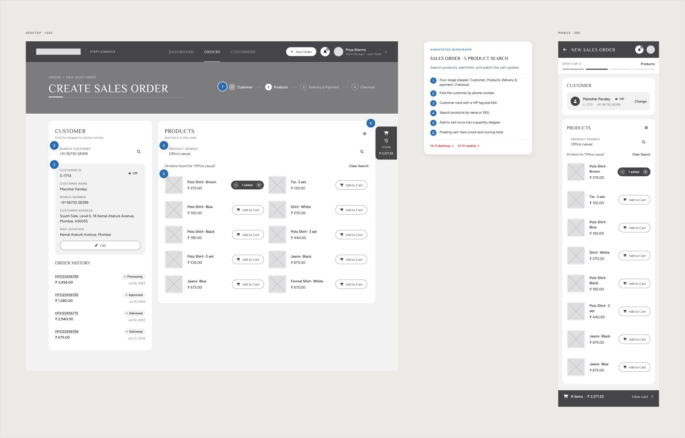
Style guide: borrow the brand, don't invent one
I pulled the colors, fonts and photos from Jai Hind's website and turned them into a small design system, so the dashboard feels like the same company.
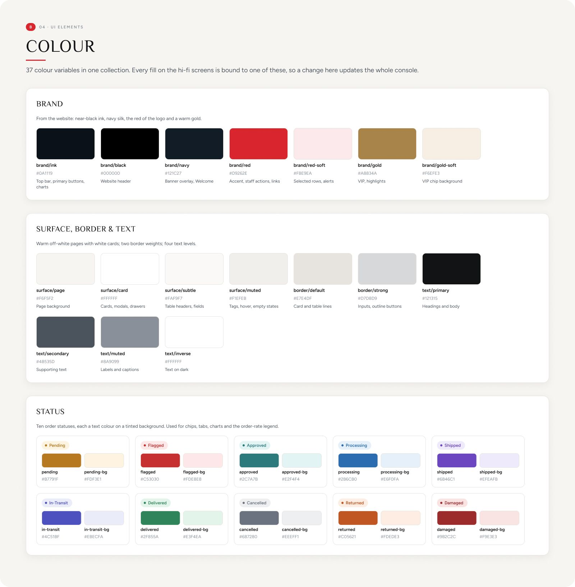
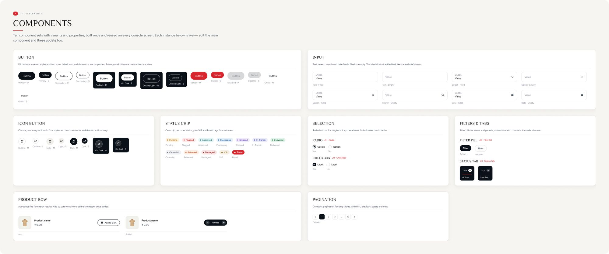
Final design: 26 screens, desktop and phone
Every screen from the team's dashboard, redesigned at desktop and phone sizes, plus the new welcome and login screens. The work staff already knew stayed the same; the friction went away.
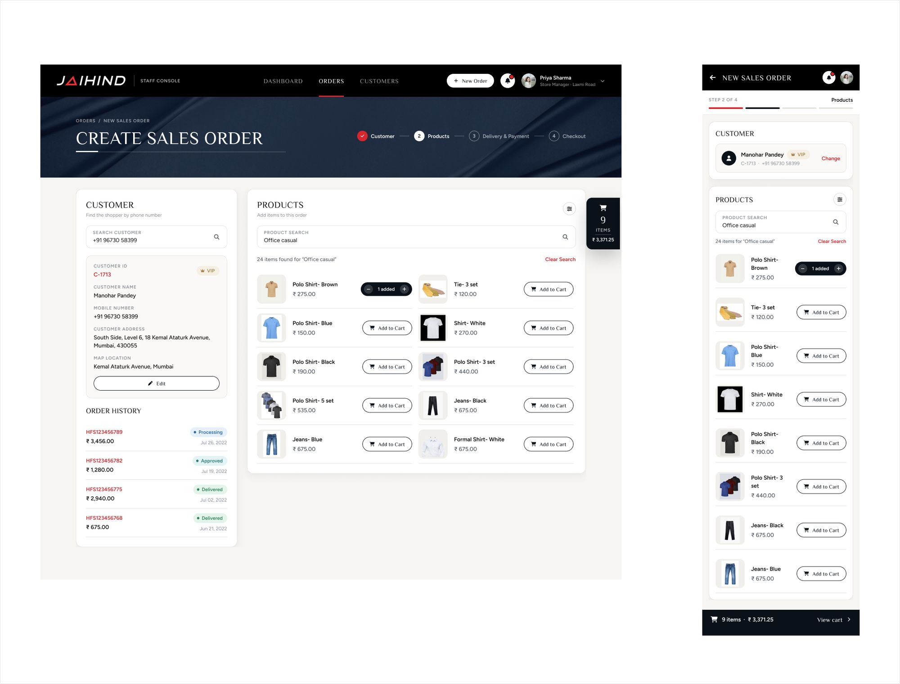
Take a phone order
Find the customer by phone number, add products, and watch the cart update live.
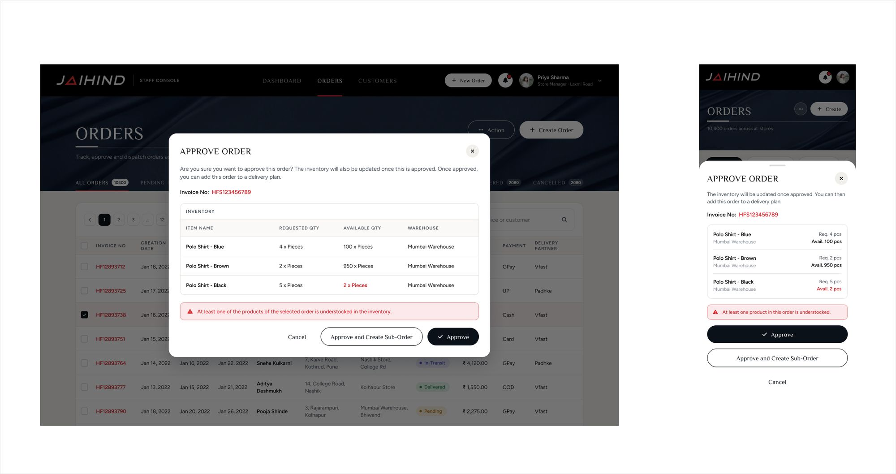
Check stock before approving
If an item is short, staff see it before the order moves, and can split it into a sub-order.
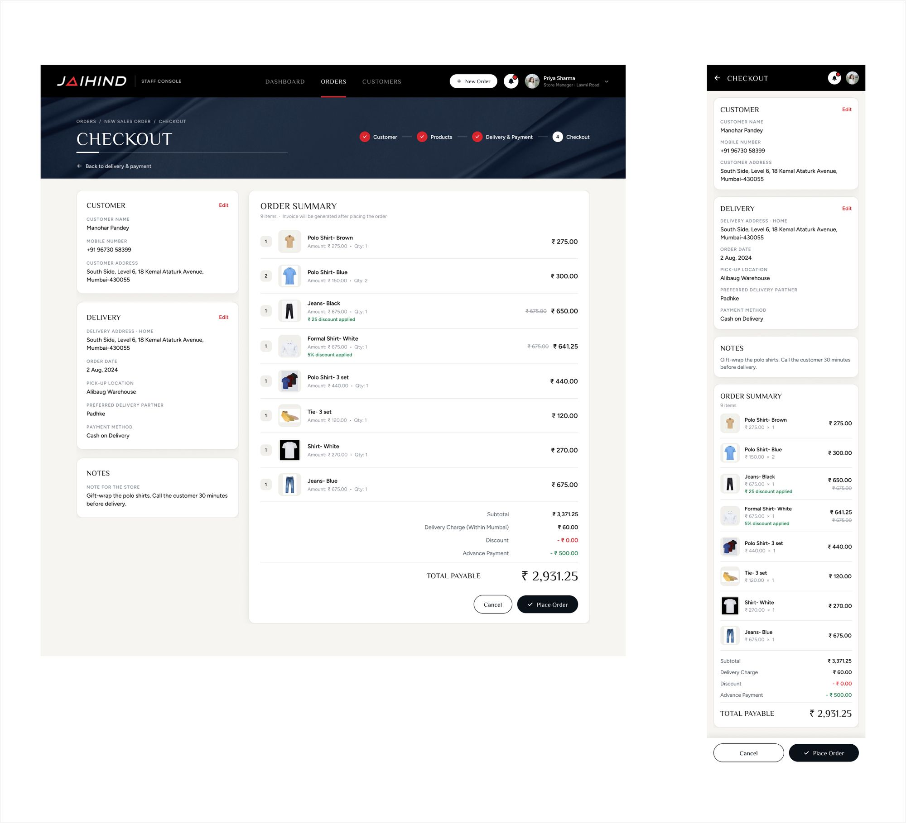
Review and place the order
Everything on one screen, with totals that update on every change.
Prototype: click through it like the real thing
I connected 118 screens with 2,104 interactions into one prototype, with separate desktop and phone flows.
- Welcome, then Explore the store, opens the shop website.
- Welcome, then Employee login, opens the dashboard, orders, customers and the 10-step sales order.
- Log out always brings you back to Welcome.

What's proven, and what's next
The original platform
Targets for testing the redesign
Test plan: moderated sessions with 5 to 6 store staff (managers, billing, floor associates) and 5 shoppers.
Three things I'd tell my past self
Audit your own work with fresh eyes
The platform worked, and a simple audit still found 10 problems.
Design for the shop floor, not just the desk
Staff walk the floor with phones, so every screen now has a phone layout.
Label guesses as guesses
Personas and targets stay marked as assumptions until real users test them.
Want the full walkthrough?
I'm happy to walk through the Figma file and the prototype on a call.